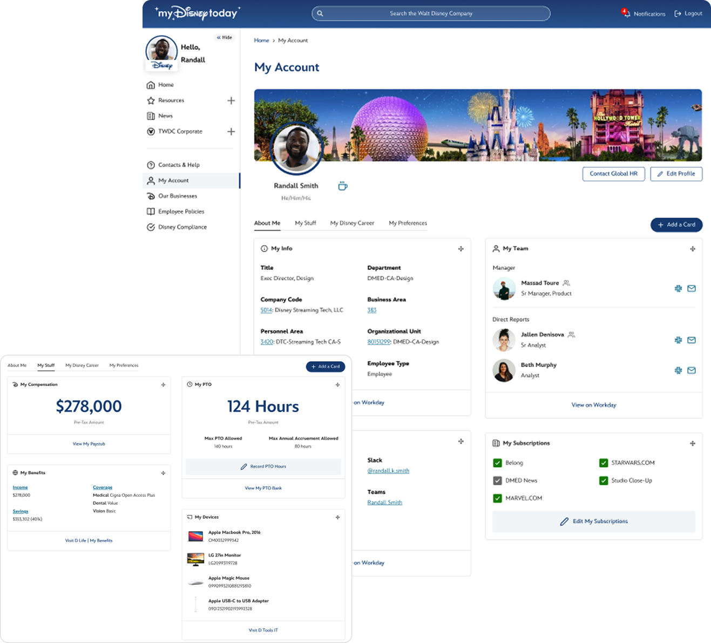

The My Account Experience
Employee resources were segregated and lacking. Finding resources, perks, and settings lived in different places on a variety of systems. With MyDisneyToday, we could offer one place for everything while data fed into the interface on the backend.
Overview
MyDisneyToday's flexibility and customization offered a chance to incorporate HR products into the platform experience and further streamline employee needs, goals, and connection. This prototype
became a concept design distributed to leadership across multiple departments.
View MVP Deck
Pain Points
Networking, finding information, subscribing to news, updating settings, and view perks were all impacted by the following obstacles:
- Multiple Touchpoints - Employees often couldn't find resources, requested support, or carried multiple bookmarks in order to find simple information such as pay, perks, and PTO.
- Lack of Networking Opportunities - Connecting with employees across Disney was inhibited by the lack of options to connect. This would often be done through email or Teams since there was no way to save contacts with vital partners.
- Redundant Steps - Employees weren't aware of who owned what information - pay vs. perks vs. benefits vs. IT. And we wouldn't expect them to know. We needed a solution to bring everything together so that, regardless of what they understood, they had exactly what they needed.
- Inconsistent Experiences - Since multiple departments owned various resources, most sites required different interactions.
Opportunities
We had a great starting point by identifying glaring issues while staging for employee interviews. These were the initial opportunities we promoted for the effort.
- Everything in One Place - Jobs, learning, connection, settings, HR resources, and IT tools all in one place.
- Visualization - We had the unique opportunity to not only pull in data but also optimize it's visual experience to make information available and understandable.
- MyDisneyToday integration - With everything in one portal, we could integrate features to include them into notifications and search results.
- Personalization - This new design could give employee's the chance to make it their own as you would with an actual workspace.
Current Experience
Current Employee Account
As you can see, the current account page was uninviting and didn't offer much use. The main interaction point on the page was with the "Subscriptions" tab which, according to UX reserch studies, employees didn't even know existed.
Proposed Employee Account
After the following journey, the final proposal consisted of connections, interactive employee information, career tracking, perks viewing, and site configurations.

Employee Research
Round 1
The first round was to get an initial pulse on the project and determine if it's worth the effort. We introduced a few preliminary concepts.
View Round 1 Research Findings
Round 2
The second round of research focused on details within the sauce. After confirming high-level needs in round one, we could then dive into the interactions and resources that lived within the profile.
View Round 2 Research Findings
Round 3
This round again focused on specific resources and perspectives that required employee understanding. We also introduced the concept of a careers portal within the account experience.
View Round 3 Research Findings
Visualizing the Experience
What Employees Want
Acknowleding that employees have wants and desires alongside their needs, we offered cards to integrate communal and wellbeing resources such as clubs, recognition and perks.
What Employees Need
We listened to employees to provide resources they required such as connections, organizational charts, PTO, and employee information.
Incorporating Career
Career and internal mobility were ongoing hurdles for employees. It was difficult to find new jobs, connect with recruiters, and plan career trajectory through offered learnings. The introduction of My Account offered an opportunity to incporoate career development into employee profiles.
View Career + My Account Proposal

Learning & Development
Alongside career, learning and development resources were vary inconsistent across businesses while Disney offered many learning opportunities at the enterprise level that were available to everyone. In the account space we could design a way for learning tracks, courses, and planning to feed into the interface to allow employees to engage in their development.
View Career + My Account Proposal

✨ Explore more of MyDisneyToday ✨
⬅ Back to MyDisneyTodayManaging Microsites
Business Admin Tool
MDT + AI Assistant